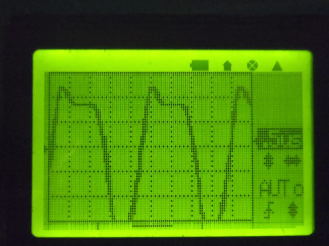

Sorry, under construction and Japanese only,Yet...
455KHz基準発振治具を作る(2012-02-27)
もくじ
これは何か
どのようなものか
製作
測定
周波数カウンタとのインタフェース
電子工作系もくじへ
全体目次へ
これは何か
中波や短波のラジオをつくろうとした時に、どうしても避けられないのがスーパーヘテロダインにすることです。
受信した信号を、中間周波数である455KHzに一度落として更に増幅し、検波し音に直す。
そこら辺を省いたストレート式のラジオでもいいのですが、感度が悪かったり逆に良すぎて発振したりする気まぐれさを持っているので安定性がない。
スーパーヘテロダイン式ラジオで普通に組もうとすると、455KHzの信号を使って調整する必要があります。
中波のラジオだと複数の放送局を受信しての調整が可能ですが、短波や長波となるとそうはいかない。動作チェックすら容易でない。
そこで、(とりあえず無変調だけど）455KHzを発振する基準信号発生器を作って見ることにしました
どのようなものか
非常にシンプルな回路です。中間周波トランス（黒）を使ってハートレー式の発振回路を組み、
その上でオシロスコープに付いているTTLレベル入力周波数カウンタを動作させるために方形波（もどき）を出す端子を一緒に付けてあります。
回路図
この回路を組むにあたってトランジスタを
2SC4116GRにしました。
よく使われてきた2SC1815は生産終了になるので、どうしても表面実装にできないもの以外はなるべくこの手の物にしようと…
しかし、このトランジスタは非常に小さなトランジスタで、通常の万能基板では実装ができません。
そこで、秋月電子から出ている「プロトタイピング基板」(矢島製作所製）を加工して使うことにしました。
しかし、それでもトランジスタのほうが小さくて難儀したのでした。
製作
この基板は、1.25mm間隔で表面実装部品をハンダ付けしやすいランドが並んでいます。ここに、トランジスタや抵抗を乗せていきます。
又、裏側はベタアースに使われることを期待して、一枚の銅箔で作られています。この面を加工し、穴を開けてIFTを付けていきます。
IFTのピンが入る穴を明けます。1.0ミリくらい。
ベタアース面の銅箔を一部削るので、IFTの外枠よりちょっとだけ大きな範囲のレジストをカッターなどで剥がします。
ついでにIFTのケースの固定用のタブをベタアース面にはんだづけするので、はんだ付けする範囲もレジストを剥がします。

IFTの固定用のタブを外側に曲げます。
とりあえず、IFTのピンの周囲の銅箔を剥ぎ取り、タブが当たるところへの予備はんだだけしておきます。
発振回路を組みます。トランジスタ→抵抗→コンデンサ→IFTと言う感じがベストのようです。
リード線や電池ボックスを付けていきます
測定
発振回路が出来たので、波形を取ってみましょう。
一目盛1Vです…3Vp-p出ていて波形も結構きれい。いい加減に設計した割にはいいかな？
IFTのコアを回すと、周波数が上がったり下がったり。
周波数カウンタとのインタフェース
JYETECH社の簡易オシロスコープには、おまけで？TTLレベル入力の周波数カウンタ機能がついていますが、生の出力を入れてもレベル不足でカウンタが反応しません。
そこで、Q2の周辺のように4.8Vp-pの方形波に変換する回路を後づけしました。
回路を組んでいきます。この写真は抵抗値や回路をその場で調整している様子
さて、調整が終わりました

1V/div
2V/div
波形が鈍っていますが、カウンタが反応するのでよしとしましょう(^_^;
周波数カウンタを使って455KHzに調整しました
本ドキュメント・及びノウハウは CC BY SA v3.0で公開します。
CC BY SA v3.0で公開します。
実装技術等の特許登録はこれを禁じます。(DO NOT PATENT THIS TECHNIQUES)
後日問題が出た場合は変更の可能性あり。
Oscilator by http://sky.geocities.jp/artanejp/ELECTRONICS/
is licensed under a Creative Commons
Attribution-ShareAlike 3.0 Unported License.
電子工作系もくじへ
全体目次へ
Last Update: 27 Feb.2012 by Artane. ( whatisthis.sowhat _a_t gmail.com )